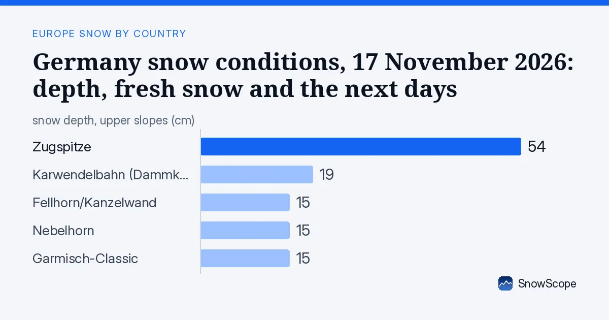

The snow is shrinking in Germany: 840 km² gone since last week
Seven days ago about 1,700 km² was white in Germany; today it is 860 km², 840 km² less.
See the live snow forecast for Zugspitze in the SnowScope appSnow depth, powder alerts and the 3D map, free.
What melted this week
The losses are at the bottom of the slopes. Higher up the snow is settling rather than going, so the upper lifts are the safe bet.
Snow covers roughly 860 km² in Germany on 17 November, 1,250 km² less than yesterday. In other words, 2 % of the mapped high ground is white.
| Resort | Snow depth | New snow, 72 h | Coming, next days | Top |
|---|---|---|---|---|
| Zugspitze | 54 cm | 12 cm | 20 cm | 2,627 m |
| Karwendelbahn (Dammkar-Mittenwal | 19 cm | 5 cm | 16 cm | 2,246 m |
| Fellhorn/Kanzelwand | 15 cm | 7 cm | 33 cm | 1,965 m |
| Nebelhorn | 15 cm | 7 cm | 32 cm | 2,213 m |
| Garmisch-Classic | 15 cm | 5 cm | 18 cm | 2,047 m |

Today's snow cover
Seven days ago the figure was 1,700 km², 840 km² more than now. Most of the ground is white from about 1,600 m up.
Snow depth by height
Climb and the snow gets deeper: between 1,000 and 1,500 m, under 1 cm on average, 14 % covered; between 1,500 and 2,000 m, 2 cm on average, 59 % covered; between 2,000 and 2,500 m, 13 cm on average, 98 % covered.
Where to ski first
Zugspitze leads with 54 cm on its upper slopes.
Next on the list: Karwendelbahn (Dammkar-Mittenwal (19 cm), Fellhorn/Kanzelwand (15 cm), Nebelhorn (15 cm) and Garmisch-Classic (15 cm).
Zugspitze picked up 12 cm in the last three days and could add 20 cm by Friday 20 November.
At Karwendelbahn (Dammkar-Mittenwal: 5 cm of fresh snow over three days, 16 cm more expected by Friday 20 November.
Count 48 white resorts out of 231 in Germany today.
The rest of the shortlist: Fellhorn/Kanzelwand: 15 cm on top, 7 cm in three days, 33 cm expected; Nebelhorn: 15 cm on top, 7 cm in three days, 32 cm expected; Garmisch-Classic: 15 cm on top, 5 cm in three days, 18 cm expected.
Forecast for the week
Over the next three days up to 11 cm is expected, and up to 31 cm over the week.
Saturday 21 November stands out, with up to 15 cm in a day.
Further out, days 8 to 14 show up to 12 cm on the snowiest slopes.
Skiing conditions
The snow is retreating uphill, so plan on the higher lifts and avoid the low valley runs.
Keep an eye on the forecast: the coming snow could change the picture quickly.
New snow in the last three days
The last three days were dry or nearly so, with no more than 2 cm anywhere.
How this start compares
Resort by resort, today against a normal 17 November: Zugspitze: 12 cm at about 1,811 m, against 20 cm in a normal year; Karwendelbahn (Dammkar-Mittenwal: 1 cm at about 1,589 m, against 12 cm in a normal year; Fellhorn/Kanzelwand: 2 cm at about 1,442 m, against 7 cm in a normal year; Nebelhorn: 1 cm at about 1,518 m, against 10 cm in a normal year.
0 of these 4 resorts are above their usual depth for the date.
These depths are for one height on each mountain, below the top, so they read lower than the upper-slope numbers further down.
In past winters the best snow at Zugspitze usually came early March / late March.
The neighbours today
For comparison, the neighbours on the same day: Austria: 34 % white, deepest Kaprun with 66 cm, up to 47 cm in the week ahead; Switzerland: 48 % white, deepest Zermatt with 47 cm, up to 129 cm in the week ahead.
Planning a day on the snow
Above 2,000 m the ground is almost fully white (98 % covered), so runs up there have a continuous base.
Between 1,500 m and 2,000 m the cover is patchy, about 59 % white: expect grass and stones between the snow.
Below 1,000 m the slopes are still almost bare.
If you can choose the day, go after Saturday 21 November: the fresh snow then has time to settle and the roads to be cleared.
Tips for skiers
- Morning snow is firm after a clear night: wait for the sun on south faces.
- Roads to the higher resorts may need winter tyres or chains.
- Snow above the tree line can be wind-packed: watch the ridges.
About these numbers
Resort snow depths are the deepest snow on the resort's upper slopes from the SnowScope snow model (about 1 km, run of 17 November); they are estimates for an area, not a measurement at one point. Station values are measurements on the date shown. Forecasts can change. Always read the official avalanche bulletin before going off-piste.
Cite this report
For research, teaching or the press: the numbers and charts are free to reuse under CC BY 4.0 with this citation.
SnowScope (2026), The snow is shrinking in Germany: 840 km² gone since last week, https://snowscope.app/blog/en/2026/11/germany-snow-report-17-november-2026.html, accessed 2026-11-17
SnowScope (Atlas Labs). (2026, November 17). The snow is shrinking in Germany: 840 km² gone since last week. SnowScope snow reports. https://snowscope.app/blog/en/2026/11/germany-snow-report-17-november-2026.html
BibTeX
@misc{snowscope2026germanysnowreport17novem,
author = {{SnowScope (Atlas Labs)}},
title = {The snow is shrinking in Germany: 840 km² gone since last week},
year = {2026},
month = nov,
howpublished = {\url{https://snowscope.app/blog/en/2026/11/germany-snow-report-17-november-2026.html}},
note = {Published 2026-11-17 12:12 UTC; accessed 2026-11-17}
}· CC BY 4.0 · Methods, data and tools →
Zugspitze: snow and temperature by height, this winter vs last (tools) →
Follow Zugspitze
Free: a message when fresh snow is coming, and the forecast every morning.
More snow reports

Snow is falling on Slovenia's ski mountains today: about 37 cm on Kanin and 21 cm on Krvavec. Where the snow lies, how it compares with past winters, and the next snowy day.

A slope map of Les Grands Montets and seven other ski areas shows how much of the ground is steeper than 30°, 35° and 40°, and why that line matters for avalanches.

Tornik on Zlatibor had up to 39 cm on its upper slopes on 15 November 2026; by Wednesday it had melted. Kopaonik barely turned white. The week day by day and what comes next.